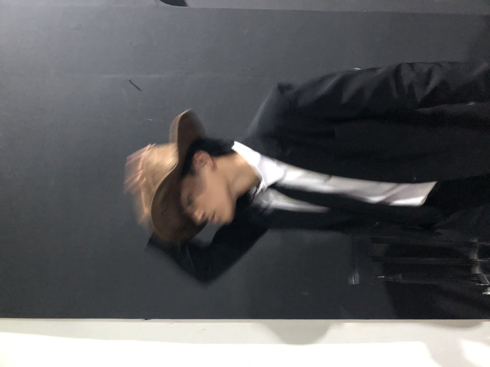

My Curriculum Vitae

Biodata Diri
- Nama : Muhammad Fatih.
- Nama Panggilan : Fatih/Fateh.
- Jenis Kelamin : Laki-laki.
- Tempat dan Tanggal Lahir : Jakarta, 10 Mei 2003.
- Tempat tinggal saat ini : Perum Grand Kahuripan Cluster Semeru Blok HJ/27, Kec. Cileungsi, Kab. Bogor, Jawa Barat.
- Hobi : Futsal dan gaming.
- Motto : Mengalah bukan berarti kalah.
- Cita-cita : Menjadi Ahli IT yang bermanfaat bagi bangsa dan negara.
Riwayat Sekolah
- SDN Jati Pulo 08 Pagi.
- SDN Klapanunggal 02.
- SMPN 1 Klapanunggal.
- SMAIT Adzkia Sukabumi.
- STT Terpadu Nurul Fikri.
Saya adalah putra pertama dari 5 bersaudara yang Insya Allah menjadi orang sukses.
Akun Instagram: @fateeh.10
No. Telepon: 081233431717